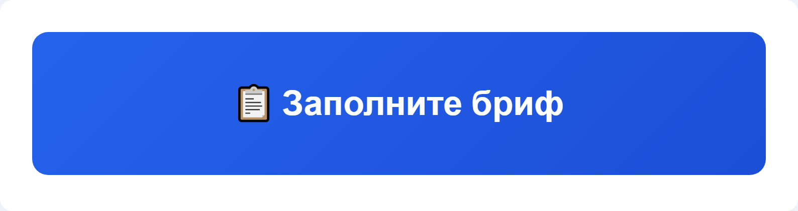
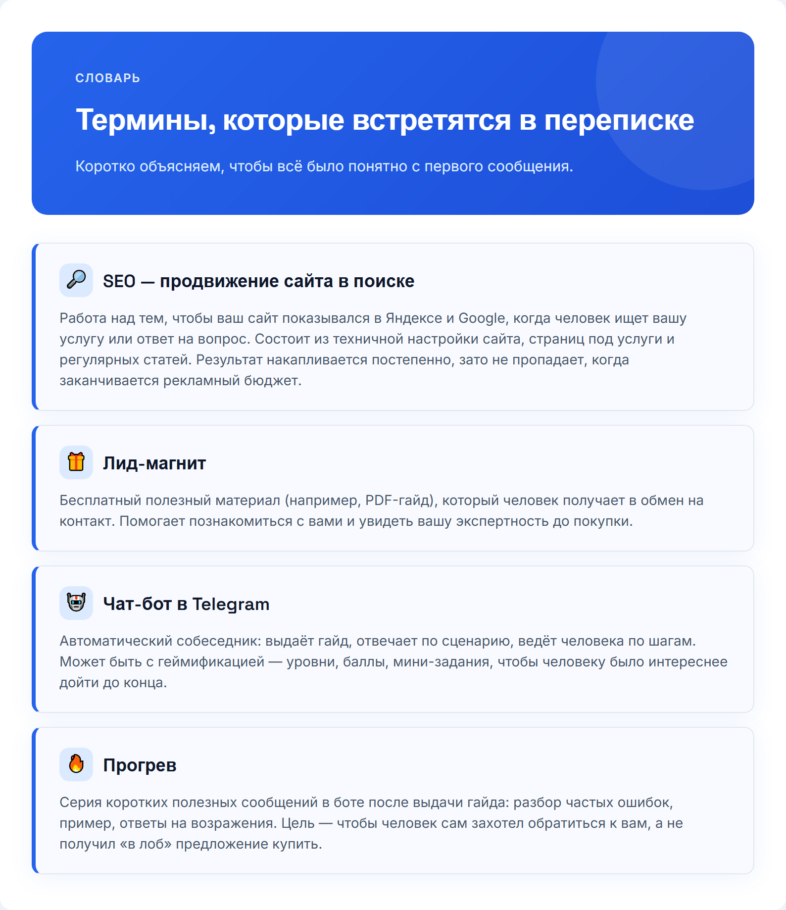
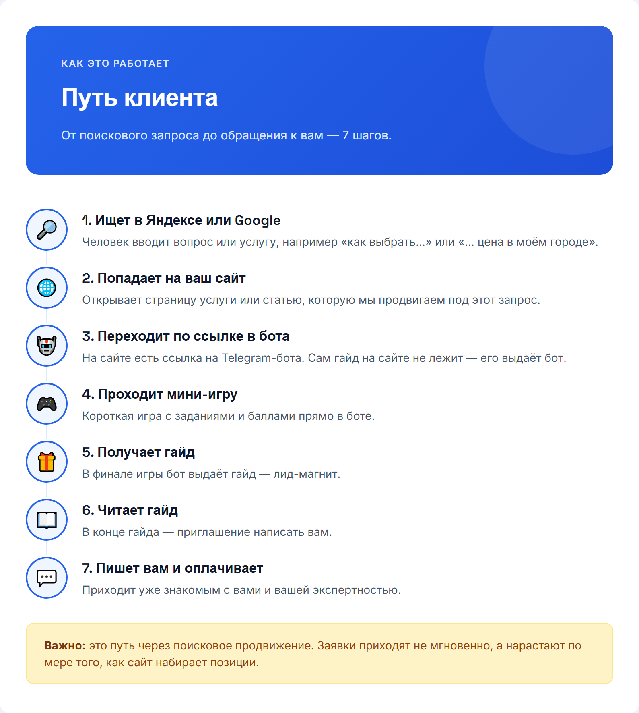
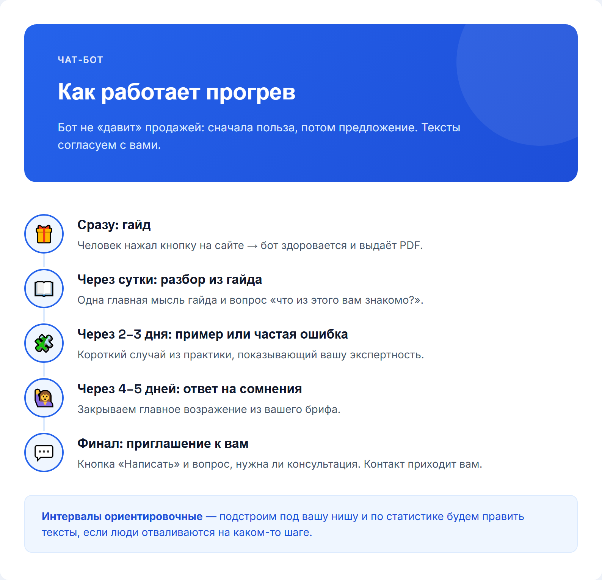
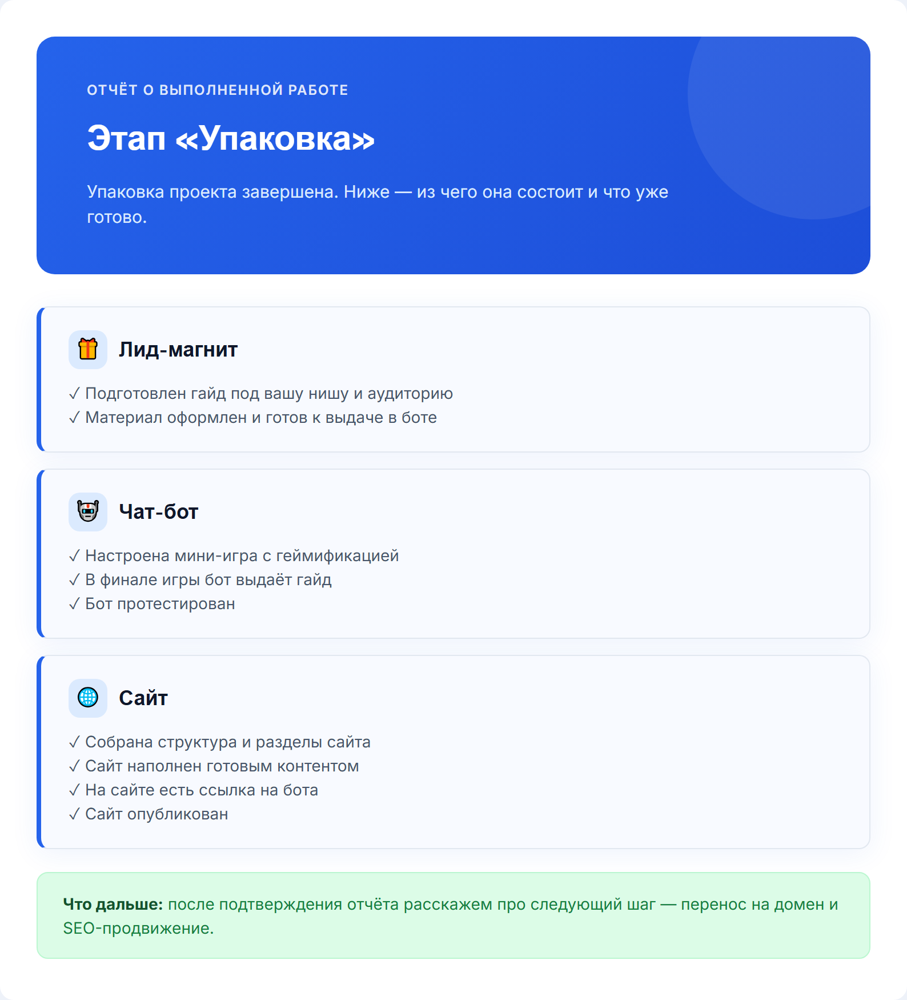
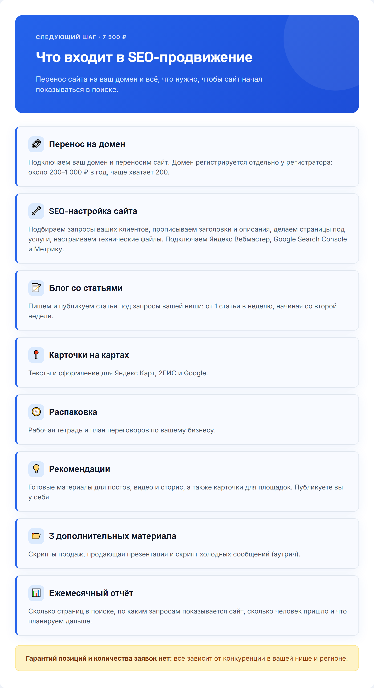
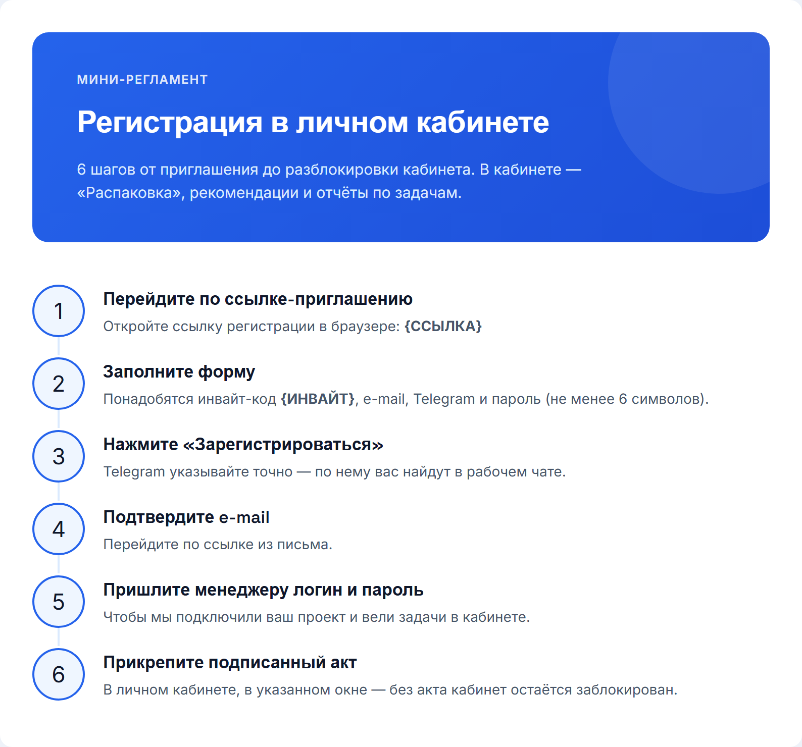
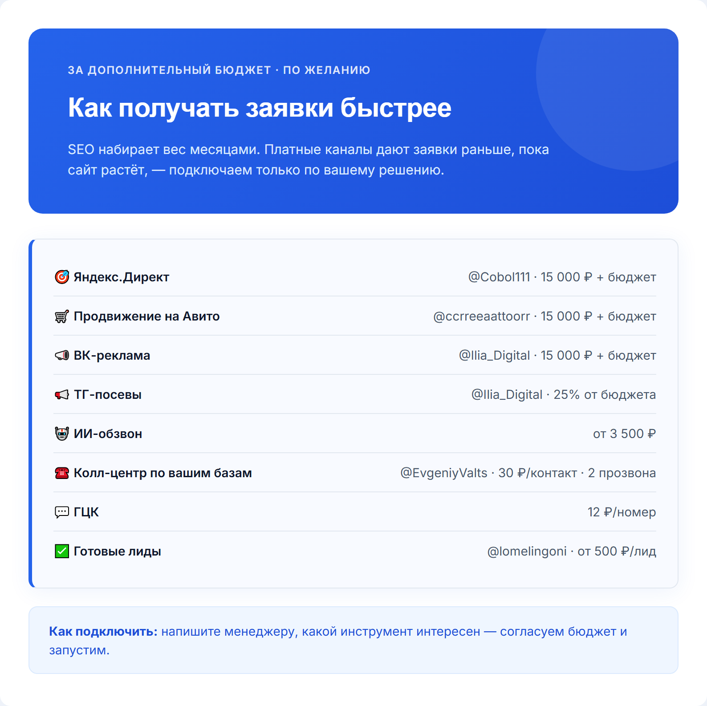

Отдельно: план продвижения бота и гайда →
Слева картинка, справа текст сообщения. Шаги идут в том порядке, в каком их отправляют клиенту.
📱 С телефона: зажмите картинку пальцем → «Сохранить в Фото». С компьютера: правая кнопка → «Сохранить картинку как…» или ссылка «Скачать файл».Это рабочий чат — здесь будем вести ваш проект от сегодняшнего дня до поставленных задач. Рады, что вы с нами 🙏

Скачать файлОтветьте на вопросы ниже — это нужно для точных целевых заявок. Нет ответа или не уверены — просто пропускайте. Можно голосовым. 🏢 О БИЗНЕСЕ 1. Сфера/ниша (напр.: психолог, брокер по новостройкам) 2. Конкретное предложение — что продаёте (напр.: «Продвижение Instagram») 3. Город(а) работы 4. Тип клиента: B2B / B2C / B2G 📊 ПОКАЗАТЕЛИ 5. Сколько клиентов сейчас в месяц (напр.: 5) 6. Желаемая выручка в месяц (напр.: 700 000 ₽) 7. Клиентский цикл (разовая покупка / подписка / долгий проект) 💰 УСЛУГИ И ЦЕНЫ 8. Список услуг с ценами, нумеруйте 8.1, 8.2... Напр.: 8.1 Курс — от 999 ₽, 8.2 Сессия 1.5ч — 7 500 ₽ 👤 АУДИТОРИЯ 9. Портрет идеального клиента (напр.: «Женщины 25-35, Москва») 10. Главная боль аудитории (напр.: «Нет заявок с сайта») 11. Ключевое возражение (напр.: «Дорого») 12. Измеримый результат (напр.: «+40% заявок») 13. УТП (напр.: «Первый месяц бесплатно») 🔗 Ссылки: ВК, ТГ, Instagram, бот, сайт, YouTube/Рутуб

Скачать файлПара терминов, которые будут встречаться в переписке — коротко объясняем:

Скачать файлВот как человек проходит путь от поиска в Яндексе до обращения к вам. Важно: это путь через поисковое продвижение. Заявки приходят не мгновенно, а нарастают по мере того, как сайт набирает позиции.

Скачать файлТак будет работать бот: человек приходит по ссылке с сайта, проходит мини-игру, а в финале получает гайд. Задания и тексты согласуем с вами.
Здравствуйте! @{НИК_КЛИЕНТА}
Посадочная страница/сайт: {ССЫЛКА_НА_САЙТ}
Заявки с сайта приходят в Telegram-бот — активируйте его по ссылке: {DEEP_LINK_БОТА}
❗ Правки вносятся ТОЛЬКО один раз — соберите все в одно текстовое сообщение (скриншоты и голосовые не принимаются техспециалистом), если потребуется что-то поправить.
❗ Если нужно добавить фото — присылайте ТОЛЬКО ссылкой на Яндекс.Диск с открытым доступом («доступно всем, у кого есть ссылка»), мы извлечём фото оттуда. По-другому техспециалист и программа файлы не принимают.
❗ Когда напишете все правки, ОБЯЗАТЕЛЬНО добавьте фразу "это всё" — так мы поймём, что можно брать в работу.
Также нужно уточнить пару моментов:
{УТОЧНЕНИЕ_1}
{УТОЧНЕНИЕ_2}
Скачать файлГотов этап «Упаковка» — все материалы созданы. Пожалуйста, посмотрите отчёт и напишите: «Принимаю» — если всё устраивает, переходим к следующему этапу

Скачать файлЗдравствуйте! Предлагаем следующий шаг: перенести ваш сайт на собственный домен и запустить SEO-продвижение, чтобы заявки шли из поиска. Стоимость: 7 500 ₽, оплата разовая. В неё входит всё, что ниже (на картинке то же самое, со сроками). ЧТО МЫ СДЕЛАЕМ 1. Перенос сайта на ваш домен — 1–2 рабочих дня Подключим домен, включим защищённое соединение, настроим переадресацию со старого адреса, проверим формы, телефоны и бота. Пришлём ссылку на новый адрес. 2. SEO-настройка — 3–5 рабочих дней после переноса Подберём запросы ваших клиентов, пропишем заголовки и описания, сделаем страницы под услуги, настроим технические файлы, подключим Яндекс Вебмастер, Google Search Console и Метрику. Пришлём список сделанного. 3. Блог со статьями — от 1 статьи в неделю, начиная со 2-й недели Сами пишем статьи под запросы вашей ниши и публикуем на сайте. 4. Карточки на картах — до 3 рабочих дней Тексты и оформление для Яндекс Карт, 2ГИС и Google. 5. Распаковка — материалы получите после оплаты Рабочая тетрадь из 5 листов, уже заполненная по вашему брифу: финансовая модель на 12 месяцев, портреты клиентов, позиционирование и кейсы, цепочка из 10 касаний для прогрева, готовые скрипты, дорожная карта. Плюс план переговоров: сценарий разговора с клиентом на 20–40 минут, от знакомства до оплаты. Вы читаете и правите под себя. 6. Рекомендации — материалы получите после оплаты 5 сценариев для видео, 5 готовых постов и 5 сторис (по одному в день, как прогрев), готовые тексты для Яндекс Карт, 2ГИС, Авито, ВК, Юду и Яндекс Услуг. Тексты и сценарии готовим мы, публикуете вы у себя. Если соцсетей пока нет, создайте их и начните с нашего контента. 7. Три дополнительных материала под ваш оффер — после оплаты Скрипты продаж (как вести диалог, называть цену, отвечать на «дорого» и «я подумаю»), продающая презентация с вашим УТП, скрипт холодных сообщений потенциальным клиентам. ВАЖНО ПРО ДОМЕН: ПОНАДОБЯТСЯ ГОСУСЛУГИ Домен вы покупаете сами на reg.ru (около 200 ₽ в год), а мы подключаем к нему сайт. По Федеральному закону от 29.12.2025 № 569-ФЗ владелец домена в зонах .ru и .рф подтверждает личность через подтверждённую учётную запись Госуслуг. Поэтому заранее подготовьте аккаунт Госуслуг и телефон, к которому он привязан. Пошаговые инструкции пришлём после оплаты, сейчас просто будьте готовы. ЗАЧЕМ СВОЙ ДОМЕН Адрес сайта — его фундамент: вся история, статьи и позиции копятся именно на нём. Свой домен принадлежит вам, внушает клиентам больше доверия и позволяет подключить фирменную почту. Подробно: https://murzzsite.github.io/domain-guide/ Весь объём работ со скриншотами: https://murzzsite.github.io/seo-work-guide/ ЧЕСТНО О РЕЗУЛЬТАТЕ Первые заметные результаты в поиске обычно появляются через 2–4 месяца. Гарантировать позиции и число заявок нельзя: они зависят от конкуренции в вашей нише и регионе. Хотите заявки уже в первые дни? — Яндекс Директ (реклама для тех, кто уже ищет вашу услугу): https://murzzsite.github.io/direct-guide/ — VK Реклама (показ по интересам и возрасту во ВКонтакте): https://murzzsite.github.io/vk-ads-guide/ ЧТО ПО ОПЛАТЕ 7 500 ₽ — разовая оплата за всё перечисленное выше. Домен оплачивается отдельно напрямую у регистратора, примерно 200–1 000 ₽ в год (чаще всего хватает 200 ₽). Порядок такой: оплата, затем покупка домена и перенос. Если вам подходит, напишите слово «домен» в ответ на это сообщение, и мы начнём.
Отлично, начинаем! 🙌
Оплатить перенос сайта и SEO-продвижение (7 500 ₽, оплата разовая) можно по ссылке: {ССЫЛКА_НА_ОПЛАТУ}
Вышлите чек в чат, как проведёте оплату, мы добавим в этот чат технического специалиста. Он поможет зарегистрировать домен и сам перенесёт сайт. От вас потребуется только выбрать название. Домен оплачивается отдельно у регистратора, программист подскажет, где выгоднее.Следующий шаг — купить домен на reg.ru. Домен оформляется на вас, это 10–15 минут. Заранее предупреждаем: понадобятся Госуслуги. По Федеральному закону от 29.12.2025 № 569-ФЗ владелец домена в зонах .ru и .рф подтверждает личность через подтверждённую учётную запись Госуслуг (ЕСИА) — так государство исключает анонимные домены. Reg.ru может запросить это при покупке или позже, при продлении, поэтому подготовьте аккаунт Госуслуг и телефон заранее. Пароль от Госуслуг нам не нужен, не присылайте его никому: проверку вы проходите сами. Пошаговая инструкция со всеми шагами: https://murzzsite.github.io/regru-guide/ Коротко: 1. Зайдите на reg.ru, найдите свободный адрес (лучше короткий, латиницей, зона .ru — около 200 ₽ в год). 2. Добавьте домен в корзину, лишние услуги (хостинг, почту, защиту) уберите — они не нужны. 3. Зарегистрируйтесь, заполните данные владельца, подтвердите личность через Госуслуги и оплатите. 4. Пришлите сюда в чат логин и пароль от личного кабинета reg.ru и купленный адрес — программист сам подключит к нему ваш сайт. После переноса рекомендуем сменить пароль в кабинете reg.ru. Перенос занимает 1–2 рабочих дня с момента получения доступа.

Скачать файлЧто нужно сделать дальше:
1. Зарегистрируйтесь в личном кабинете по ссылке:
{ССЫЛКА_НА_ПЛАТФОРМУ}
Инвайт-код: {ИНВАЙТ_КОД}
2. После регистрации подтвердите аккаунт через e-mail и пришлите нам логин и пароль — чтобы мы подключили ваш проект.
3. Прикрепите в личном кабинете подписанный акт — без него кабинет остаётся заблокирован.
4. В кабинете вы увидите раздел «Распаковка», рекомендации и отчёты по задачам.Прикрепляем короткое видео, как работать в личном кабинете:
{ССЫЛКА_НА_ПЛАТФОРМУ}
Что в видео:
— Раздел «Распаковка» — фундамент: кто ваш клиент, чем вы отличаетесь, как продаёте.
Черновики уже готовы, нужно только поправить под себя.
— Блок рекомендаций — что публиковать и куда, и как прикладывать отчёты.
Посмотрите один раз полностью — дальше будет легко ориентироваться самим.
После просмотра:
1. Начните проходить задачи в блоке рекомендаций по порядку
2. Прикладывайте отчёты к выполненным задачам — так быстрее проверим
Вопросы — пишите сюда 🙂
Скачать файлЕсли захотите получать заявки быстрее, чем набирает вес SEO, можно параллельно подключить платные каналы — это отдельный бюджет, подключаем только по вашему желанию. Список и цены — на картинке. Пишите — согласуем и запустим.